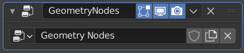

Geometry Nodes Modifier¶
Modifier Geometry Nodes tạo một modifier kèm theo một node group định nghĩa chức năng của nó.

Một Geometry Nodes modifier mới với một node group mới.¶
Modifier này được hỗ trợ trên các object mesh, curve, text và volume.
Tùy chọn¶
- Node Group
Một Node Group với đầu vào và đầu ra hình học. Đây lần lượt là những gì nhận được từ modifier đứng trước trong stack và chuyển sang modifier đứng sau. Xem Các Node để biết tất cả các node khả dụng.
- Inputs
Danh sách đầu vào của node group, có thể mang các giá trị riêng biệt ngay cả khi group được dùng chung giữa nhiều modifier.
Nếu đầu vào được nối với một socket Field, sẽ có một nút gạt để chuyển đổi giữa việc dùng một giá trị duy nhất cho đầu vào hoặc dùng một attribute trên hình học đầu vào. Dùng attribute cho đầu vào nghĩa là giá trị có thể khác nhau cho từng phần tử.
Tên attribute được dùng theo mặc định khi lần đầu tiên dùng node group trong một modifier được định nghĩa trong panel đầu vào node group.
Ghi chú
Domain của attribute và kiểu dữ liệu dùng để truy cập attribute được xác định bởi node mà đầu vào nối vào.
Cảnh báo¶
Các node hiển thị thông điệp cảnh báo trong node editor cũng sẽ hiển thị thông điệp đó tại đây.
Có thể tạo các thông điệp cảnh báo tùy chỉnh bằng Node Warning.
Attribute đầu ra¶
Bằng cách nối một field socket vào node đầu ra của group, bạn có thể tạo các Attribute tùy chỉnh từ một đầu ra Field của bất kỳ node nào trong node tree. Domain của attribute phải được chỉ định trong thuộc tính đầu ra của group node. Lưu ý, điều này không hoạt động với Instanced Data.
Tên attribute được dùng theo mặc định khi lần đầu tiên dùng node group trong một modifier được định nghĩa trong panel đầu ra node group.
Panel này bị ẩn trừ khi node đầu ra có socket attribute.
Manage¶
Hiển thị các tùy chọn để quản lý dữ liệu bên trong node group,
Panel Manage có thể bị ẩn bằng cách tắt Show Manage Panel trong các tùy chọn header của modifier. Điều này quyết định panel có hiển thị cho modifier cụ thể đó hay không.
Để tắt panel theo mặc định cho các modifier mới được tạo từ một node group asset, hãy bật/tắt Show Manage Panel Geometry Nodes trong thuộc tính của node group.
Bake¶
- Đích Bake
Chỉ định nơi dữ liệu đã bake được lưu. Có thể ghi đè riêng cho từng lần bake.
- Packed:
Dữ liệu đã bake được đóng gói vào file .blend. Vì vậy không cần file riêng nào.
- Disk:
Dữ liệu đã bake được lưu trong một thư mục riêng trên đĩa.
- Đường dẫn Bake
Vị trí trên đĩa nơi lưu dữ liệu đã bake của Simulation Zones và Bake Nodes.
Xem thêm
Attribute có tên¶
Panel này hiển thị thông tin về tất cả các attribute có tên tùy chỉnh được node group sử dụng. Thêm thông tin có trong trang kiểm tra geometry nodes.
Operator Move to Nodes¶
Tạo một geometry node tree mới với tên của node tree hiện tại cộng thêm .wrapper vào cuối tên. Thao tác này chuyển tất cả đầu vào và đầu ra từ modifier cũ vào một node group mới. Để operator này hoạt động, bắt buộc phải có một Group Input và một Group Output, mỗi cái có một socket Geometry nối với node group. Hành động này khiến tất cả các Output Attributes trở thành Internal Dependencies nhờ vào Node Store Named Attribute. Khi đó, tất cả các "đầu vào" của modifier cũng sẽ trở thành đầu vào của node group mới được tạo.
Operator này hữu ích để dễ dàng tái sử dụng một node tree trong các tree khác, hoặc đánh dấu nó là một Asset để dùng lại trong các dự án khác.